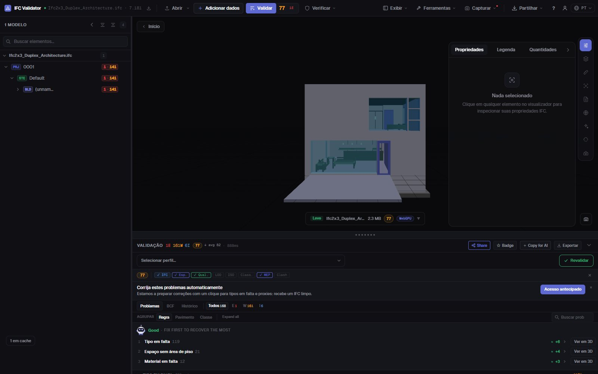
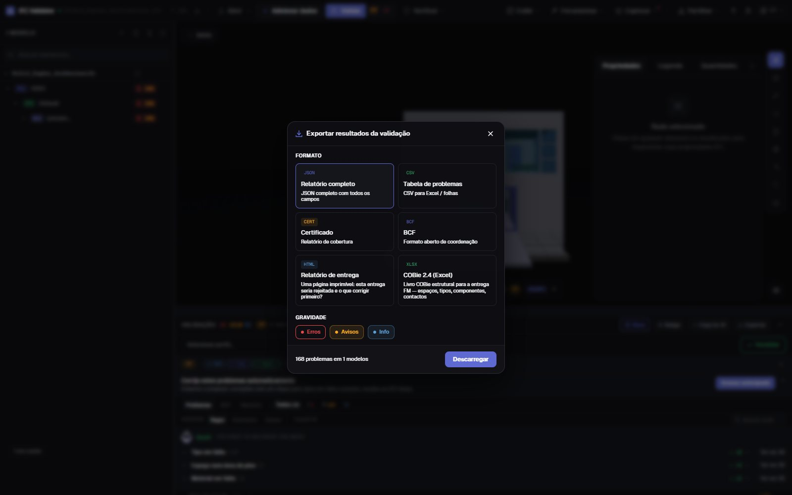

Verificação de qualidade IFC
nota e relatório em 30 s
Arraste um IFC e obtenha o Health Score de 0 a 100 com 44 regras de qualidade — GUIDs, estrutura espacial, tipos, materiais, conjuntos de propriedades, coordenadas — com os três problemas que mais pontos custam em primeiro lugar. Depois exporte um relatório de entrega imprimível, um certificado, BCF ou COBie.
Verificar o modelo — grátis →Sem conta · Nada é enviado · No seu navegador · Grátis

O que pode fazer
Uma verificação que pode entregar
Uma nota para o cliente, a lista completa para o autor e a evidência para o CDE.
Health Score 0–100
Uma nota da qualidade dos dados do modelo, ponderada pela gravidade, com a média do setor para comparar.
O que corrigir primeiro
As regras que mais pontos custam, com os pontos a recuperar — e um botão para ver os seus elementos em 3D.
44 regras + IDS
GUIDs, hierarquia espacial, órfãos, tipos, materiais, Psets, unidades, coordenadas, colisões — e qualquer IDS da buildingSMART.
Relatório de entrega imprimível
Um relatório HTML de uma página (esta entrega seria rejeitada, o que corrigir) que se imprime ou guarda em PDF a partir do navegador.
Certificado, BCF, COBie
Um certificado de cobertura, temas BCF 2.1 para o autor, CSV/JSON e um livro COBie 2.4.
Nada é enviado
A verificação corre no navegador com WebAssembly. Sob NDA, offline, em qualquer computador.
Capturas

FAQ
Perguntas frequentes
O que é uma verificação de qualidade de um modelo IFC?
Uma revisão automática da qualidade dos dados de um IFC: estrutura, identificadores, classificação, propriedades e coordenadas. O IFC Viewer Online resume-a num Health Score de 0 a 100 e lista cada problema com o elemento afetado.
Posso obter o resultado como relatório PDF?
Sim. Exporte o «Relatório de entrega»: um relatório HTML imprimível de uma página com a nota, as contagens de problemas e as prioridades. Abra-o e imprima ou «Guardar como PDF» no navegador. Também há certificado JSON, CSV, BCF e COBie.
Tenho de enviar o modelo IFC para o verificar?
Não. Ao contrário dos serviços que exigem envio, o ficheiro é aberto e verificado no navegador; nunca vai para um servidor.
O que é uma boa nota?
90–100 está pronto a entregar, 75–89 serve para coordenação com pequenas correções, 50–74 precisa de trabalho antes da entrega e abaixo de 50 há problemas graves de dados.
É grátis?
Sim, para qualquer uso, incluindo projetos comerciais, sem conta e sem limite de tamanho pago.
Verifique o modelo antes do seu cliente.
Health Score · Prioridades · Relatório imprimível · BCF · COBie
Verificar o modelo — grátis →